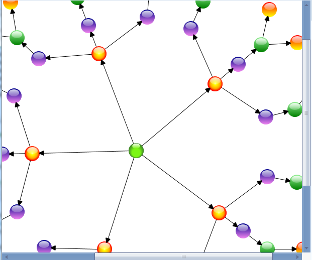

Fit-to-page will bring the whole diagram into the viewport using the zooming options. This helps you view the whole diagram page in the viewport without having to scroll.
Use Case Scenarios
In a large network diagram each object will be far from another. You need to scroll the diagram page to explore the objects that are outside the viewport. Using this feature you can bring the whole diagram into the viewport area.
Properties
|
Property |
Description |
Type |
Data Type |
|
EnableFitToPage |
Gets or sets the FitToPage property of the diagram page. |
Dependency |
Boolean |
|
FitToPageCommand |
This ICommand is used to execute the fit-to-page on demand. |
Dependency |
ICommand |
Sample Link
To view a sample of this feature:
1. Open Dashboard.
2. Click User Interface > WFP.
3. Click Run Samples.
4. Navigate to Diagram > Overview Demo.
 Note: A demo of this
feature is included in the Overview sample.
Note: A demo of this
feature is included in the Overview sample.
Enabling Fit-to-Page
You can enable the feature in two methods. They are:
· Using Property
· Using Command
Using Property
You can enable fit-to-page to bring the whole diagram within the viewport, either by zooming in or by zooming out.
To enable this feature, set the EnableFitToPage property of the diagram view to True. The following code illustrates this:
|
[XAML] <Syncfusion:DiagramControl Grid.Row="1" Name="diagramControl" > <Syncfusion:DiagramControl.Model> <Syncfusion:DiagramModel x:Name="diagramModel"> </Syncfusion:DiagramModel> </Syncfusion:DiagramControl.Model> <Syncfusion:DiagramControl.View> <Syncfusion:DiagramView EnableFitToPage="True" Name="diagramView"> </Syncfusion:DiagramView> </Syncfusion:DiagramControl.View> </Syncfusion:DiagramControl>
|
|
[C#] // Enable FitToPage of the DiagramView diagramView.EnableFitToPage = true;
|

Figure 138: Fit-to-Page Disabled
Figure 139: Fit-to-Page Enabled
Using Command
You can execute a fit-to-page command to bring the whole diagram within the viewport either by zooming in or zooming out.
Note: Using this command
you can fit the content within the viewport even if the EnableFitToPage property
of the diagram view is set to False.
The following code illustrates how to bring the whole diagram into the viewport using a command:
|
[XAML] <Button Command="FitToPage" CommandTarget="{Binding ElementName=diagramView}"CommandParameter="{Binding ElementName=diagramPage}"> FitToPage </Button> |
|
[C#] DiagramCommandManager.FitToPage.Execute.(diagramView.Page, diagramView); |